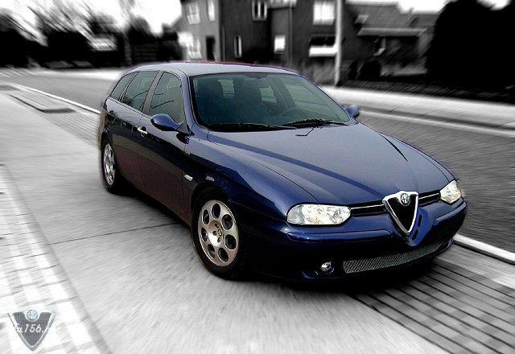
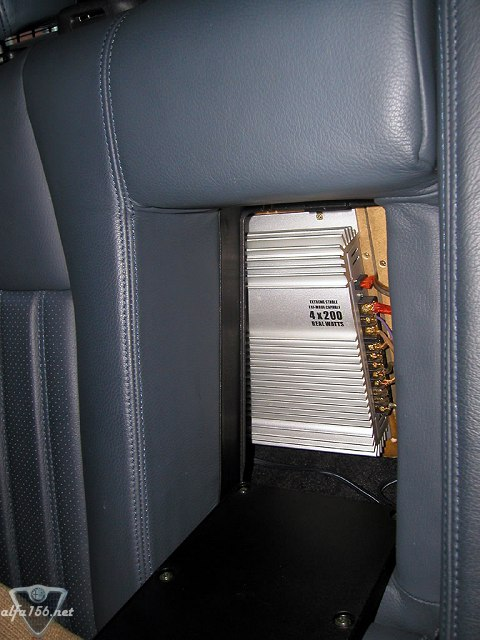
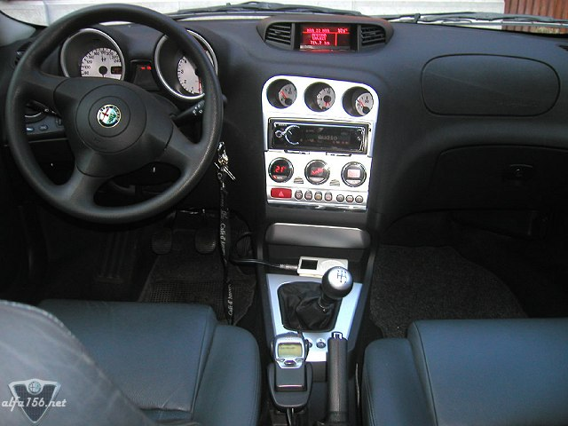
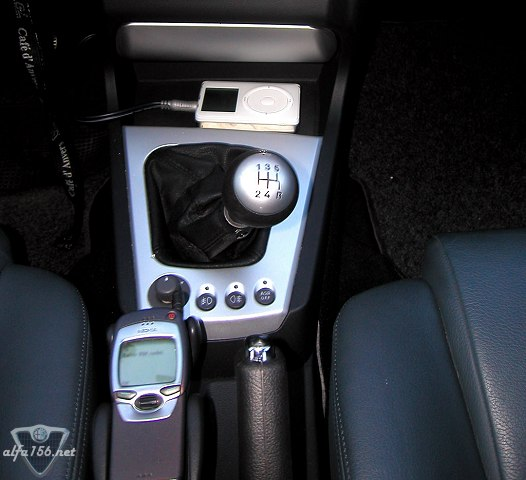
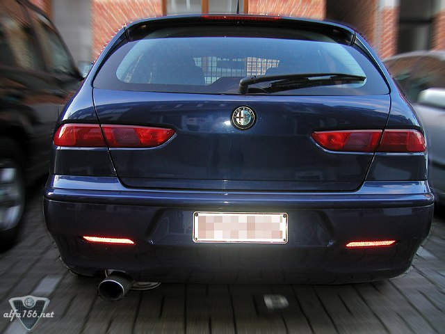
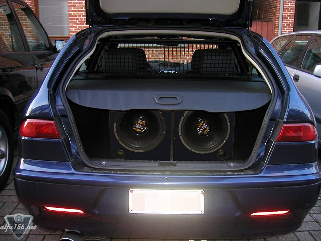

1.9JTD115 of 2003. Lowered 45mm by Alfa Romeo, has the optional 16" 7-hole rims (winter),
a modified grill, white side indicators and custom exhaust on the outside. Dark blue
leather, Sony X-plod dual remote controlled mediacentre connected to an Apple iPod and
to a 4x200 watt RMS CLIMAX amplifier on the inside, plus 2 LANZAR subs (450Watts each)
and appropriate 3-way speakers, 2-way speakers and tweeters. Nokia carkit in front and
a fridge in the back! Owned by Cedric Claes, located in Belgium.





![[Prev]](bw_prev.gif)
![[Index]](bw_index.gif)
![[Next]](bw_next.gif)